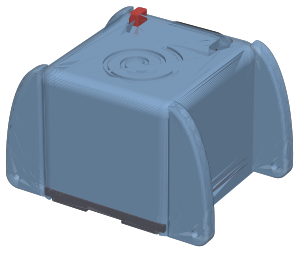
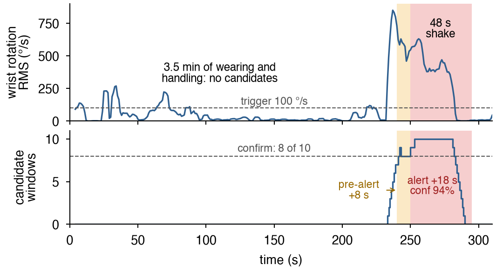

A watch that spots the rhythmic jerking of a tonic–clonic seizure and alerts a paired phone.
Embedded Challenge, Fall 2026 · Seeed XIAO nRF52840 Sense · Arduino (Adafruit nRF52) on PlatformIO
Educational prototype. Not a medical device. Do not rely on it for anyone's safety.

What it detects
The convulsive (clonic) phase of generalized and focal-to-bilateral tonic–clonic seizures:
strong, regular jerking of the arm at 2–8 Hz, with wrist rotation, lasting about 8 s or more.
These seizures make the clearest wrist movement, so they are the first target.
It does not detect absence, focal-aware, atonic or other low-motion seizures. It gives no warning
before the convulsion starts. It measures wrist motion only, not brain activity, and cannot diagnose epilepsy.
How it works
IMU FIFO 52 Hz
→
4 s window every 1 s
→
features (FFT)
→
rules
→
alert state machine
→
LED + Bluetooth
Sense. The LSM6DS3TR-C accelerometer (±8 g) and gyroscope (±2000 °/s) fill the sensor's own FIFO
at 52 Hz. Once a second its watermark interrupt wakes the nRF52840, which reads the batch and sleeps again.
The last 30 s of raw data stay in a RAM ring buffer and are saved as a snapshot at every alert.
Features. Every second, over the last 4 s (gravity and gyro drift removed with a 0.5 Hz high-pass):
RMS motion, newest-second RMS, peak-to-peak, jerk, and a 256-point FFT giving the dominant frequency
and rhythm (share of power at the peak and its 2nd harmonic), for both accelerometer and gyroscope.
Candidate window when all of these hold:
accel RMS ≥ 0.3 g · gyro RMS ≥ 100 °/s (also in the newest second) ·
dominant frequency 2–8 Hz in both sensors · rhythm ≥ 0.3 in both
Confirm and alert. 8 of the last 10 windows → PRE-ALERT. No cancel within 10 s →
ALERT, with confidence = 60% persistence + 40% rhythm quality. Updates every 30 s; ENDED
after 15 s without rhythm (looser "hold" thresholds), then a 60 s cooldown: one seizure, one alert.
Keeping false alarms down
Several features at once. Walking and running arm swing (about 1–1.5 Hz) fail the frequency test.
Tooth brushing and clapping fail the rotation or rhythm test. Short bursts like waving fail the 8-of-10 and
newest-second tests.
Two-stage alert. The wearer can cancel a false pre-alert by double-tapping the watch (the IMU's own
tap engine). A tap only counts during the pre-alert and while the wrist is steady, because clonic jerks can
look like taps, and a seizure must never cancel its own alert. No response means the alert is sent.
Faults are kept apart. Sensor missing or stalled (auto-restart), FIFO overrun, clipping and low
battery are reported on the Status channel, never as seizure alerts.
Efficient by design
The CPU sleeps between once-a-second FIFO interrupts (FreeRTOS tickless idle). The gyro runs in normal (not
high-performance) mode and the microphone is unpowered. LED patterns run on a software timer that only wakes at pattern edges.
Bluetooth advertises every 100 ms for 30 s, then about once a second. The battery is read once a minute.
Using it
Wear it snug on the wrist with a 19 mm strap (20 mm spring bars). A loose watch adds noise.
Charge through USB-C (remove the plug cover): 90 mAh LiPo, about 2 h; the small charge LED lights while charging.
Phone: in nRF Connect, connect to SynapSense, open service 7A3E0001-… and subscribe
to Alert and Status (show as text). Write test, cancel, ack or
status to Command. test sends a test alert to check the link.
Amber blinking but you are fine? Hold your wrist still, then double-tap the watch.
After an alert, check on the wearer. The red blip stays until it is acknowledged (double-tap or ack).
3 green blinks
started OK
blue blip every 5 s
on, no phone connected
green blip every 5 s
on, phone connected
amber blinking
pre-alert: hold still, double-tap to cancel
fast red blinking
ALERT sent to the phone
red blip every 3 s
alert not acknowledged yet
long green
cancelled / acknowledged
3 quick red
cancel ignored: wrist still moving
purple double blink
sensor fault
Tested

Real wrist recording run through the firmware's detector (the board and the Mac replay give the
same events). 3.5 min of wearing and handling: no candidate windows. A 48 s forearm shake (4–6 Hz): pre-alert
after 8 s, alert after 18 s, one alert, then "ended, lasted 48 s". 18 unit tests with synthetic seizures,
walking, running, tooth brushing, clapping and waving also pass.
Limits
Thresholds were set from synthetic data and simulated shaking, not real seizures; clinical recordings are
needed to tune them. Vigorous rhythmic activity (e.g. shaking a bottle) can cause a pre-alert. Only a phone
connected in nRF Connect sees alerts: no caregiver SMS, no emergency calls.